Tumor-Immune Crosstalk
Decode how cancer cells, macrophages, T cells, and stromal neighborhoods interact to shape immune evasion and therapy response.
Aarhus University · Department of Biomedicine
Dr. Xiang Zheng leads translational spatial proteomics programs that decode tumor-immune ecosystems, discover biomarkers of therapy resistance, and bridge multiplexed imaging with deep proteomic profiling for precision oncology.
Research Focus
The lab combines clinical questions with high-dimensional imaging, laser microdissection, mass spectrometry, and computational interpretation to resolve molecular programs inside tissue.
Decode how cancer cells, macrophages, T cells, and stromal neighborhoods interact to shape immune evasion and therapy response.
Build and apply mipDVP workflows that connect multiplexed tissue images with deep proteomic measurements at spatially defined cell populations.
Transform archived and clinical tissues into molecular maps that reveal biomarkers, vulnerabilities, and patient-specific therapeutic hypotheses.
Representative Work
The provided representative article introduces mipDVP and applies it to colorectal and tonsil cancer tissues to reveal spatially regulated tumor-immune interactions.
Platform
The design emphasizes the lab's methodological identity: spatial context first, then deep molecular profiling, then translational interpretation.
Visualize tumor, immune, and stromal markers across intact clinical tissue sections.
Choose cell populations and niches based on tissue context and biological hypotheses.
Measure thousands of proteins from selected cells using sensitive mass spectrometry.
Identify biomarkers, immune adaptations, and therapeutic targets for precision medicine.
Research Infrastructure
Based in the Skou Building at Aarhus University, our research infrastructure brings together automated multiplexing, laser microdissection, mass spectrometry, and spatial metabolomics.
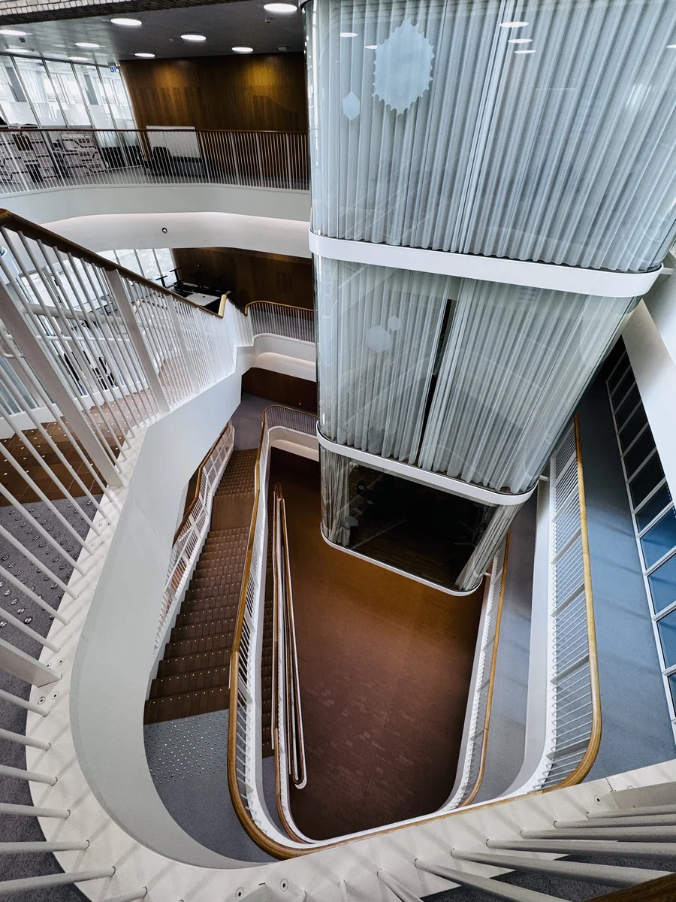
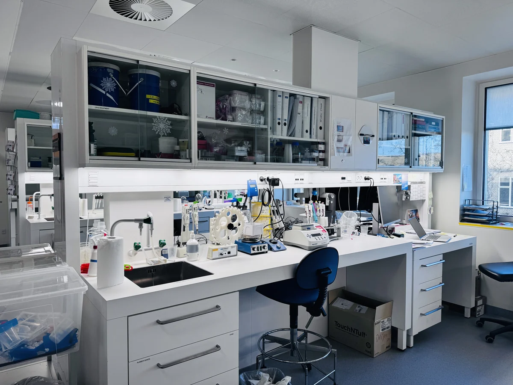
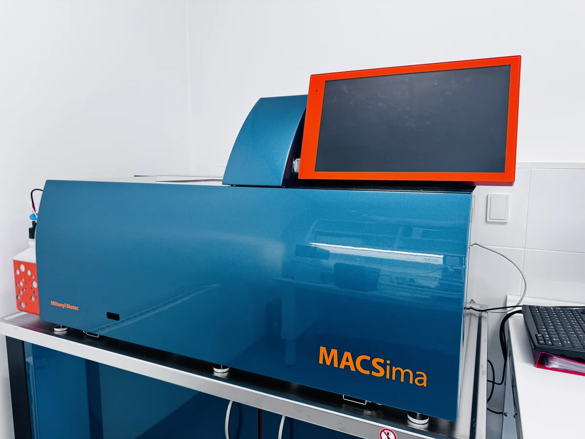
Automated multiplexing
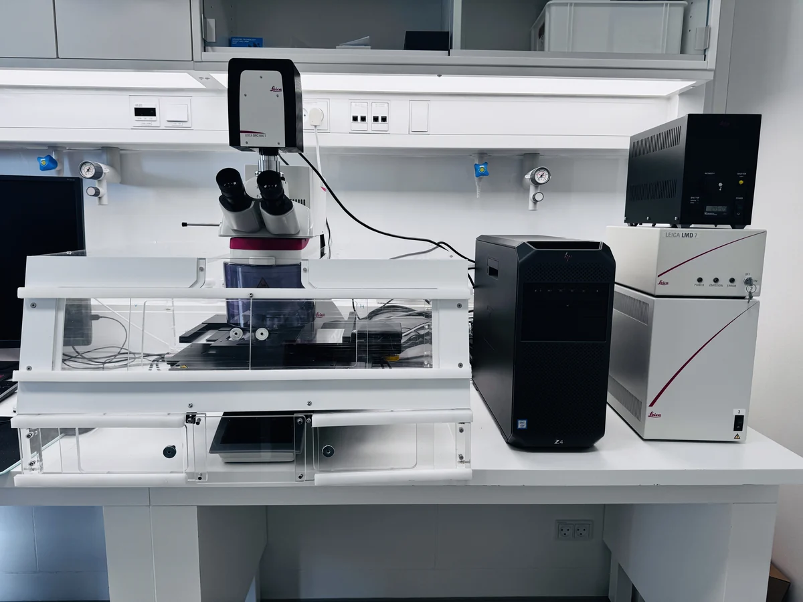
Laser microdissection
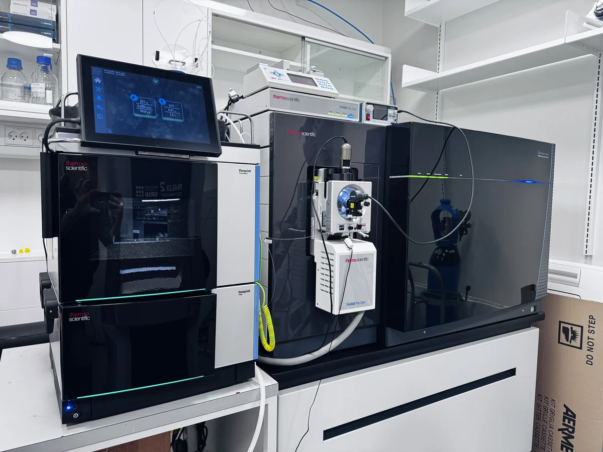
Mass spectrometry
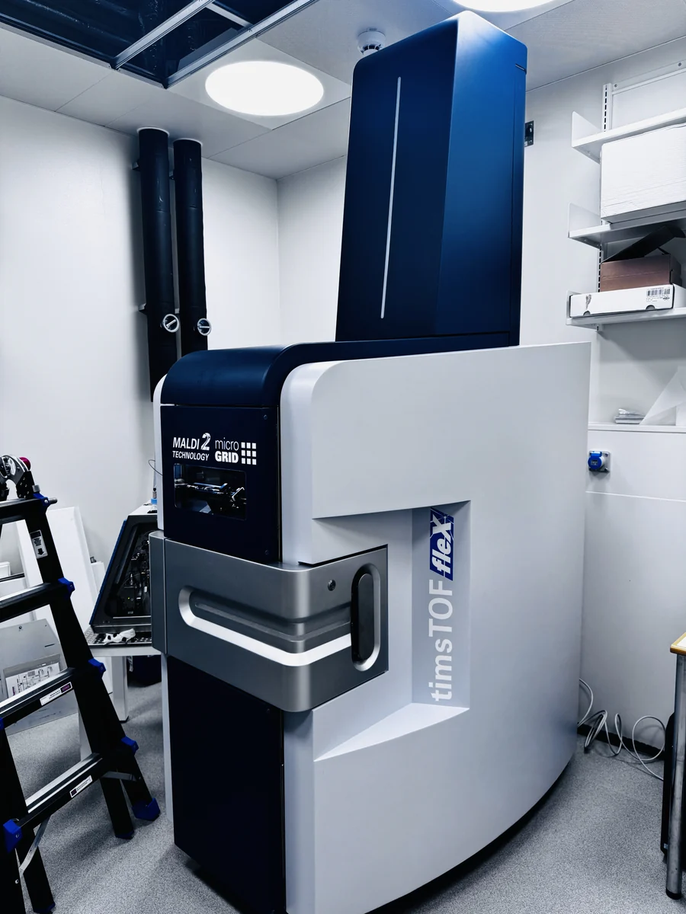
Spatial metabolomics
Our Team
Our independent research group at Aarhus University is backed by a 12 million DKK LEO Foundation starting grant. Together, we study spatial proteomics for precision oncology and dermatology.
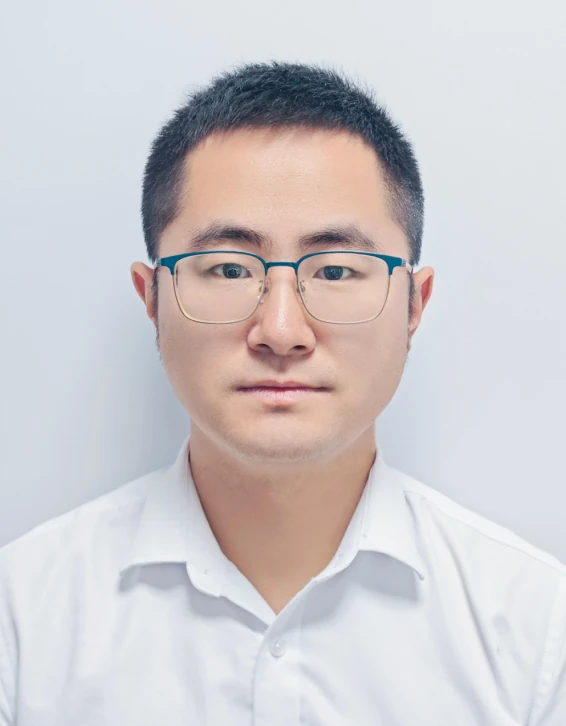
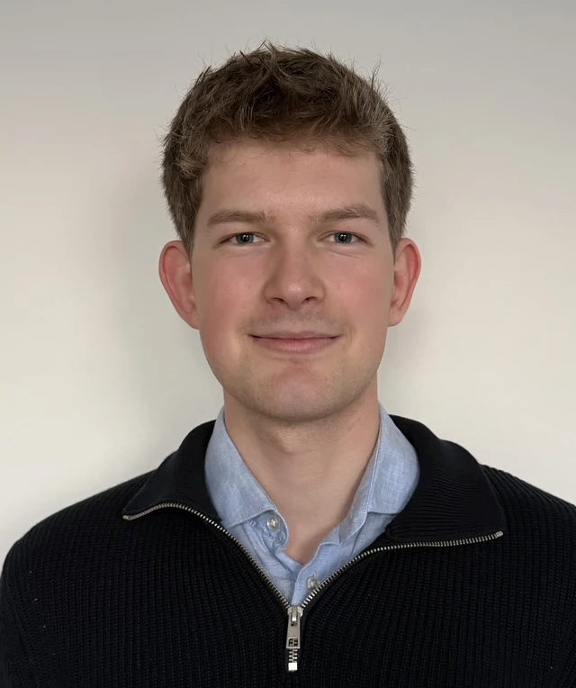
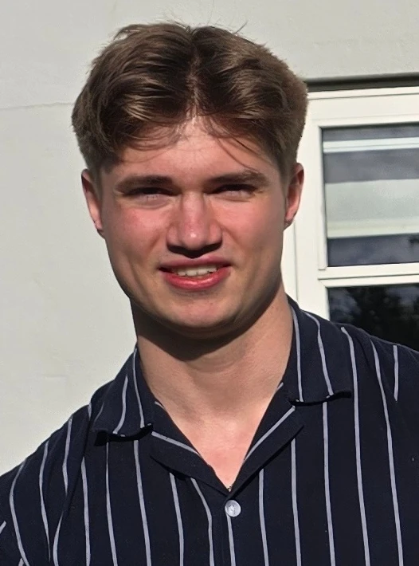
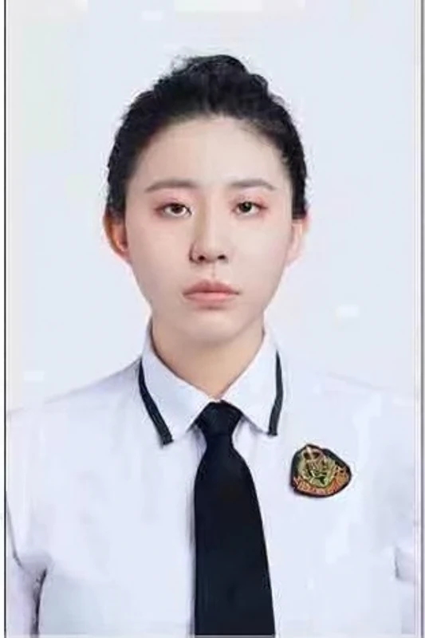
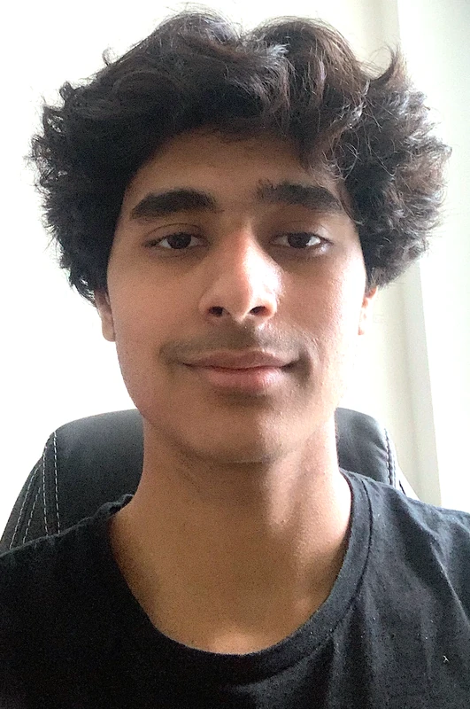
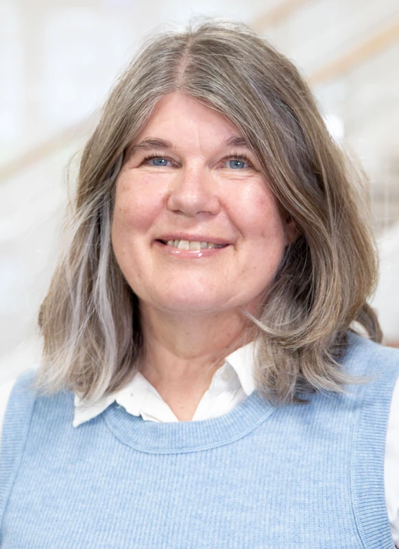
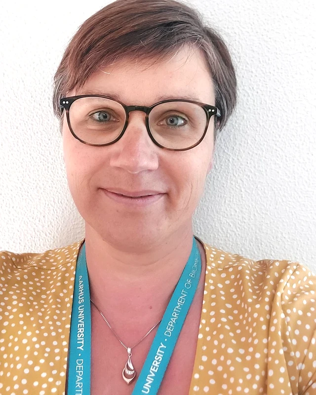
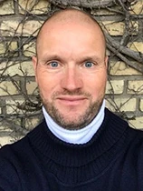
CV / About
Xiang Zheng, PhD, is a Group Leader and LEO Foundation Dr. Abildgaard Fellow at Aarhus University, advancing spatial proteomics, immune microenvironment biology, and precision medicine.
Author of 22 publications, including 11 as first author and 4 as corresponding author. Secured 8 competitive research grants totalling approximately 17 million DKK, received travel or award-based funding on 9 occasions, delivered 42 invited or selected international conference talks, and received 20 international awards.